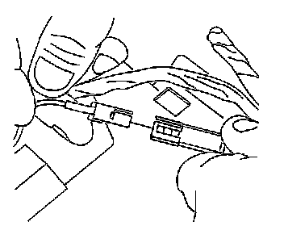
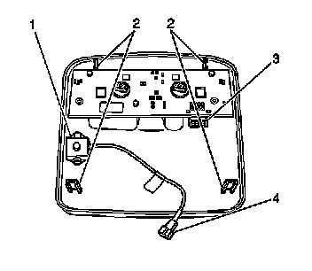

Automatic Volume Control: Service and Repair
Radio Volume Compensator Interior Noise Microphone Replacement
Removal Procedure

1. Pull down the overhead console to release the retainers securing it to the headliner.
2. Lower the overhead console.
3. Disconnect the microphone electrical connector.

4. Remove the microphone retaining screws.
5. Remove the microphone (1).
Installation Procedure
1. Install the microphone (1).
Notice: Refer to Fastener Notice .
2. Install the microphone retaining screws.
Tighten the screws to 2 N.m (18 lb in)
3. Connect the microphone electrical connector.
4. Install the console retainers to the headliner bracket.
5. Push up on the console to secure it to the headliner.